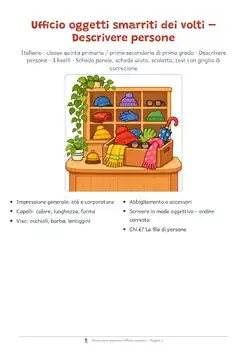
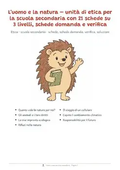
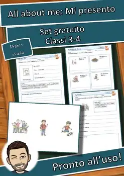
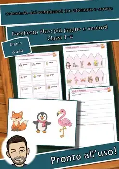
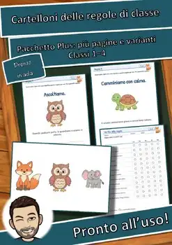
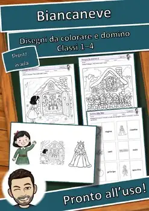
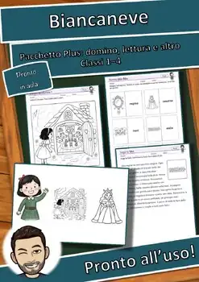
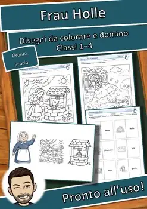

Spunti per parlare: Frutta e verdura – Spunti per parlare – Classi 1–4
1,49 €Vedi su eduki
24 carte con domande sul tema Frutta e verdura: ogni immagine ha una domanda o uno spunto per parlare su tre livelli, con l'inizio di una frase come aiuto. Sono inclusi regole, un tabellone con il dado, modelli di frasi, carte vuote e risposte di esempio. Uso in classe: parlare e ascoltare, cerchio
TemaCultura generale
ClassiI primaria, II primaria, III primaria
Tipo di materialeMateriale
FormatoPDF
Materiali simili

Descrivere persone: l'ufficio oggetti smarriti, quinta primaria e prima media

L'uomo e la natura – etica per la scuola secondaria: 21 schede su 3 livelli

Laboratorio di inglese: All about me: Mi presento – Set gratuito (GRATIS)

Officina di classe: Calendario dei compleanni Plus

Officina di classe: Cartelloni delle regole di classe – Pacchetto Plus

Laboratorio delle fiabe: Biancaneve – Disegni da colorare e domino (GRATIS)

Laboratorio delle fiabe: Biancaneve Pacchetto Plus
